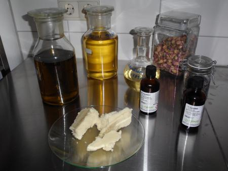

Herstellungsverfahren & Inhaltsstoffe
In meiner Kosmetikmanufaktur stelle ich gewerbsmäßig Naturseife & Badezusätze vom ersten Herstellungsschritt bis zur liebevollen Verpackung per Hand her. Mein Rezept dafür: fundiertes Wissen durch meine Ausbildung als Lebensmitteltechnologin gemischt mit Kreativität, Sorgfalt und Liebe zum Detail.
Alle Seifen werden nach einem sehr alten Verfahren - der Kaltverseifung - hergestellt. Diese Form der Seifenherstellung war bis ins 19.Jh. das am weitesten verbreitete Verfahren zur Herstellung feiner Toilettenseifen. Erst durch die einsetzende Industrialisierung um 1850, wodurch die industrielle Fertigung von Massenware möglich wurde, geriet dieses in Vergessenheit. Heute wird diese alte Handwerkstradition in vielen Orten wiederbelebt und oft mit neuen wissenschaftlichen Erkenntnissen bereichert. Das Ergebnis sind die verschiedensten individuellen Seifensorten mit hervorragenden Wasch- und Pflegeeigenschaften, die das tägliche Waschen zu einem angenehmen Vergnügen werden lassen.
Die Kaltverseifung ist ein schonendes Verfahren, bei dem Fette bzw. Öle im Temperaturbereich von 30 - 40 °C verseift werden und das bedeutet statt langer Kocherei bei Temperaturen weit über 80°C (wobei wertvolle Inhaltsstoffe zerstört werden) sehr viel sorgfältige Handarbeit.
Bei der industriellen Herstellung von Seifenstücken hingegen werden oft Abfallfette verwendet und synthetische Stoffe, die einfach preiswerter sind als natürliche Rohstoffe, aber auch bei empfindlicher Haut Allergien auslösen können. Weiterhin wird das Glycerin entzogen und als wertvoller Rohstoff weiterverkauft. Im Gegensatz zu den Industrieseifen bleibt das Glycerin bei der Herstellung von Naturseife zu 100% in der Seife enthalten und kann so zur Verbesserung des Feuchtigkeitsgehaltes - und somit auch zur Verbesserung des Hautgefühls , besonders von trockener Haut, beitragen. Die Seife ist deshalb weicher und sollte daher möglichst trocken gelagert werden- dann werden Sie auch lange Freude an ihr haben.
Für die Herstellung meiner Seifen verwende ich nur hochwertige Pflanzenöle, deren Eigenschaften unter Philosophie genauer beschrieben werden. Erst gegen Ende des Verseifungsprozesses werden wertvolle ätherische Öle hinzugegeben, damit diese so weit möglich erhalten bleiben und ihre Wirkung auf der Haut entfalten können. Es werden Duftmischungen, aber auch einzelne Düfte verwendet.
Die Herstellung von kaltgerührten Pflanzenölseifen erfolgt ganz nach dem Motto: Nur so viel Chemie wie nötig (ganz lässt sich darauf natürlich nicht verzichten, da die Seifenherstellung ja ein chemischer Prozess ist), aber es müssen keine Konservierungsmittel wie z.B. Parabene , Emulgatoren (z.B. Polyethylenglykole, kurz PEG`s) und antibakteriellen Zusätze, die die Haut reizen können, verwendet werden.